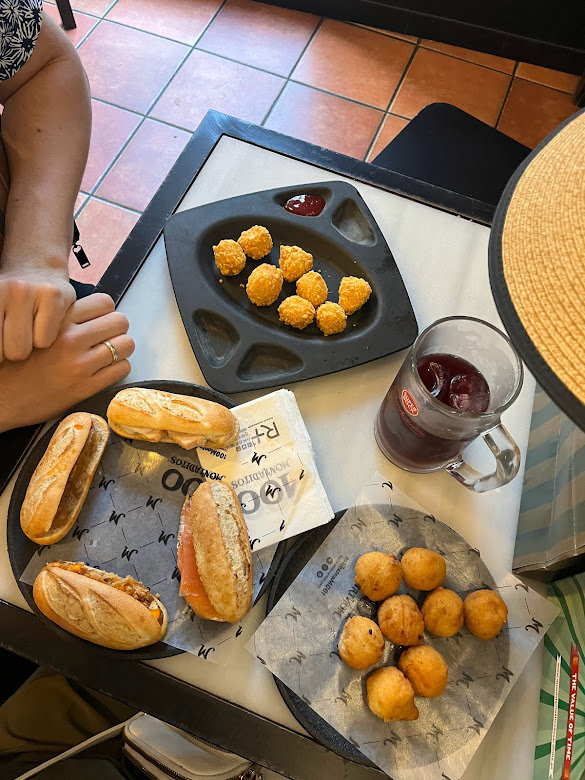
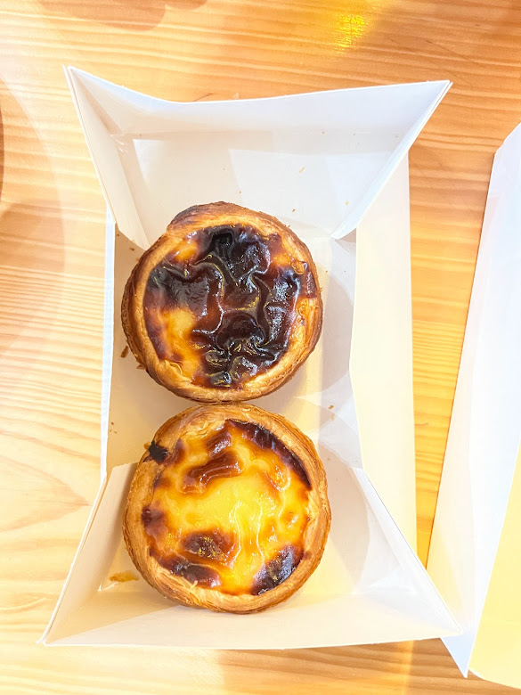

If you are looking for affordable food in large amounts that taste great, 100 Montaditos is the place to go. They have different deals everyday. The service is quick and the alcohol is cheap. There are also plenty of locations scattered across Portugal.
100 Montaditos
Pasteis de Belem
Pasteis de Belem is the OG location of pasteis de Nata, a Portugues pastry. It was originally made by the monks of Lisbon. 10/10 would recommend you try it here and at other pastry shops you see along the way. Add some cinnamon to it for an extra burst of flavor.
Amorino
If you are a gelato lover, you HAVE to stop by Amorino. They let you pick multiple flavors of Gelato and shape it on the cone to resemble a rose. The Gelato there is by far some of the best Gelato that I have ever had!
>